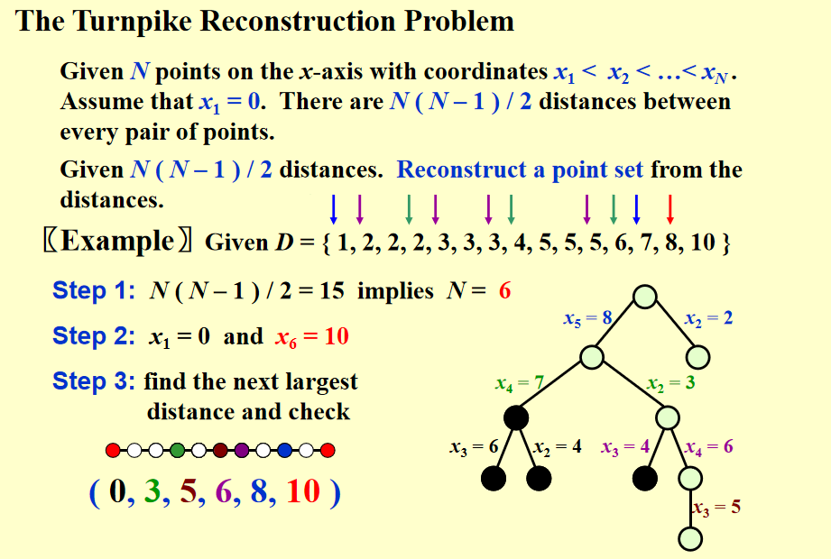
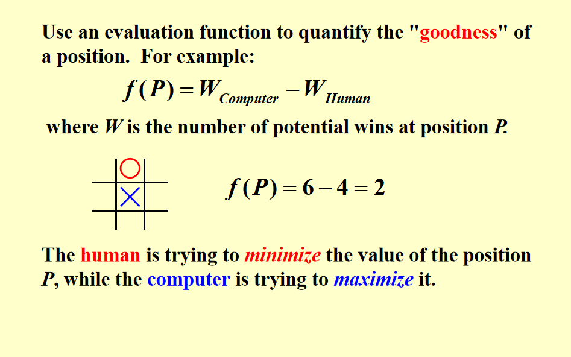
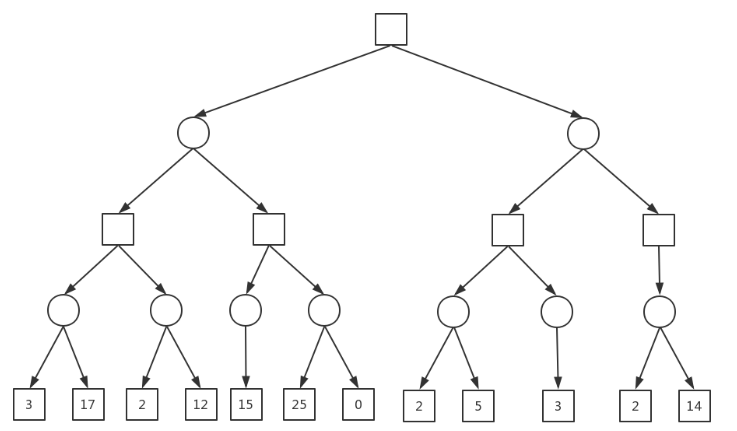
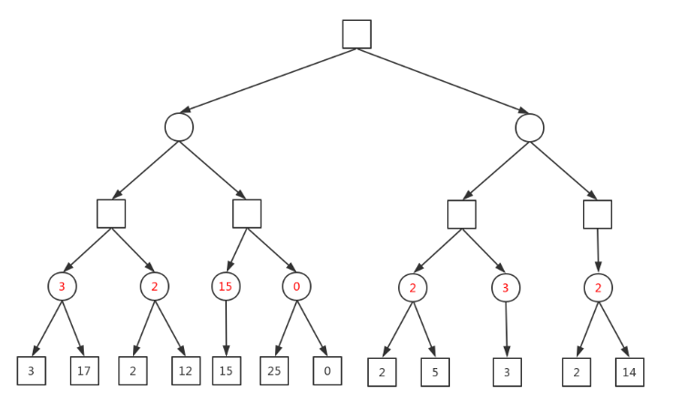
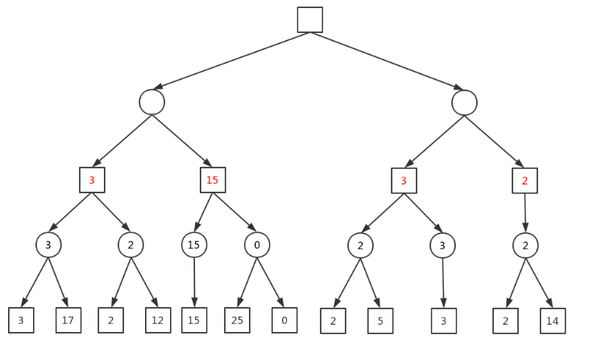
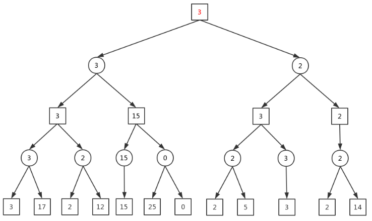

Lesson6：回溯法
假设我们有一个部分解（x₁, x₂, ..., xᵢ），其中每个 xₖ 都属于一个集合 Sₖ，且 1 ≤ k ≤ i < n。接下来，我们将 xᵢ₊₁ 从集合 Sᵢ₊₁ 中选择，并检查 (x₁, x₂, ..., xᵢ, xᵢ₊₁) 是否满足约束条件。如果满足约束条件，那么继续添加下一个元素；如果不满足约束条件，则删除 xᵢ 并回溯到上一个部分解 (x₁, ..., xᵢ₋₁)。
公路重建问题(示例)：
题目描述：给定一个 n 个点的集合，以及这些点之间的距离。要求重新安排这些点的顺序，使得相邻两个点之间的距离都在给定的集合中。

bool Reconstruct ( DistType X[ ], DistSet D, int N, int left, int right )
{ /* X[1]...X[left-1] and X[right+1]...X[N] are solved */
bool Found = false;
if ( Is_Empty( D ) )
return true; /* solved */
D_max = Find_Max( D );
/* option 1：X[right] = D_max */
/* check if |D_max-X[i]|D is true for all X[i]’s that have been solved */
OK = Check( D_max, N, left, right ); /* pruning */
if ( OK ) { /* add X[right] and update D */
X[right] = D_max;
for ( i=1; i<left; i++ ) Delete( |X[right]-X[i]|, D);
for ( i=right+1; i<=N; i++ ) Delete( |X[right]-X[i]|, D);
Found = Reconstruct ( X, D, N, left, right-1 );
if ( !Found ) { /* if does not work, undo */
for ( i=1; i<left; i++ ) Insert( |X[right]-X[i]|, D);
for ( i=right+1; i<=N; i++ ) Insert( |X[right]-X[i]|, D);
}
}
/* finish checking option 1 */
if ( !Found ) { /* if option 1 does not work */
/* option 2: X[left] = X[N]-D_max */
OK = Check( X[N]-D_max, N, left, right );
if ( OK ) {
X[left] = X[N] – D_max;
for ( i=1; i<left; i++ ) Delete( |X[left]-X[i]|, D);
for ( i=right+1; i<=N; i++ ) Delete( |X[left]-X[i]|, D);
Found = Reconstruct (X, D, N, left+1, right );
if ( !Found ) {
for ( i=1; i<left; i++ ) Insert( |X[left]-X[i]|, D);
for ( i=right+1; i<=N; i++ ) Insert( |X[left]-X[i]|, D);
}
}
/* finish checking option 2 */
} /* finish checking all the options */
return Found;
}
孩子们井字棋也干了。

Minimax 极小化极大值策略
一个游戏中定义一个好度函数，对于两个选手，对手希望这个函数大，我们希望这个函数小。假设两个选手都足够聪明，那么敌方选手一定会选择当前情况下使得函数最大的策略，我们选择当前情况下使得函数最小的策略。那么从最低一层往上推就可以得到最优解。
我们知道，在之前利用回溯来进行模拟的游戏，例如定点与井字棋一类的游戏，我们都建造了一棵博弈树以在已知解加尝试的情况下行不通的情景跳回已知解。Minimax算法的目标是通过递归遍历这棵树，从叶子节点（游戏结束状态）向上计算每个节点的得分，并决定每个玩家的最佳策略。
下面是引用一个博客的演示图，可以讲的清楚一些。

假设这是一棵博弈树，方块代表先手使得得分最高，圆形代表后手使得得分最低。
那么对于这一情景，圆形应当选择当前状态下使得得分最低的所有选项。

方块则相反。

同理，我不再赘述。

但是由于随着层数增加，检查次数指数级增长，这样的时空复杂度通常都是不可接受的。
alpha-beta 剪枝策略
Alpha-Beta剪枝是对Minimax算法的改进，通过引入 α（Alpha） 和 β（Beta） 两个值来限制需要遍历的节点。具体来说：
α（Alpha）：在一个 Max节点（最大化玩家的回合）中，α表示当前已知的 最好的值（即当前最大化玩家能够获得的最大值）。 β（Beta）：在一个 Min节点（最小化玩家的回合）中，β表示当前已知的 最差的值（即当前最小化玩家能够保证的最小值）。
Max节点：尝试选择最大值（让Max玩家得分最大），但如果某个子节点的值大于或等于β，那么就可以剪去这个节点的后续分支（不再搜索它的其他子节点），因为该节点的值不会影响最小化玩家的选择。
Min节点：尝试选择最小值（让Min玩家让Max玩家的得分最小），但如果某个子节点的值小于或等于α，那么就可以剪去这个节点的后续分支（不再搜索它的其他子节点），因为该节点的值不会影响最大化玩家的选择。
因此在博弈树中，如果某个估值是可以被考虑的，我们有: alpha <= 估值 <= beta。
首先我们要知道，Max节点只更新aplha，Min节点只更新beta。
我当时第一次看的时候脑瓜子也是嗡嗡的，有点绕且不是很直接，且容我慢慢道来。
首先假设一个零和博弈，我们目的是最大化我们的得分，对手则是最小化我们的得分。
在这一情景里面，什么叫做"最差"呢？对于我们自己的回合来说，最差就是增加的分数最少；对于对手，就是他们的回合使我们增加的分数最多。
那么此时，
引用
https://blog.csdn.net/weixin_42165981/article/details/103263211
https://oi-wiki.org/search/alpha-beta/
关注yelan谢谢喵: http://39.101.204.195/Blog/Note/ADS